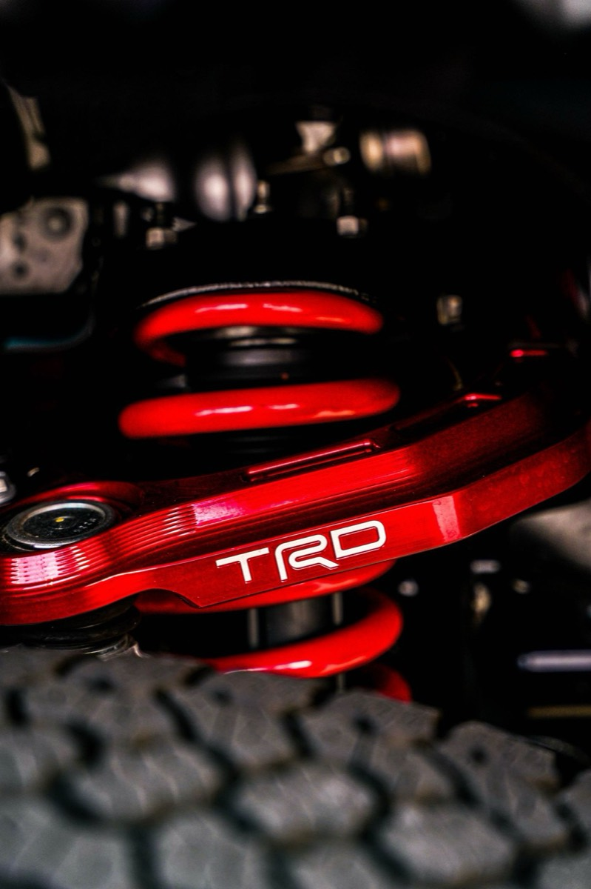

Leveling Kit on a 2026 Silverado 1500 RST 4x4: What It Actually Changes
The first modification most Silverado owners make isn't performance. It's posture. Walk up to a stock 2026 Silverado 1500 and the front sits visibly lower than the rear. That's intentional — GM builds in a rearward rake so the truck sits level when you put weight in the bed or hook up a trailer. It'

The first modification most Silverado owners make isn’t performance. It’s posture.
Walk up to a stock 2026 Silverado 1500 and the front sits visibly lower than the rear. That’s intentional — GM builds in a rearward rake so the truck sits level when you put weight in the bed or hook up a trailer. It’s a sensible engineering decision that looks wrong in a parking lot. A leveling kit is the fix, and it’s the single most common first mod on these trucks.
Here’s what a leveling kit does, what it costs you, and where the trade-offs actually land.
What a leveling kit really is
A leveling kit raises the front of the truck to match the rear. On a 2026 Silverado 1500 it comes in two forms:
Strut spacer kit. A machined aluminum or polyurethane spacer that bolts on top of the front strut assembly. It’s the cheaper option, it doesn’t change your ride quality much at modest heights (1.5–2 inches), and it can be installed without disassembling the strut in many cases. This is what most people mean when they say “leveling kit.”
Full strut replacement. A complete replacement strut with the lift built in, often with adjustable damping. More expensive, but it lets you correct the geometry properly and improve ride quality at the same time.
For a mostly-street RST 4x4, a 1.5–2 inch strut spacer is the standard answer. Beyond 2 inches you’re into geometry-correction territory and the calculus changes.
The real cost isn’t the kit
The spacer itself runs roughly $80–$250 depending on brand and material. That’s not where the money goes. Budget for:
- Alignment. Mandatory after any front suspension height change. Skipping this is the most common mistake and it eats tires fast.
- Labor or your own Saturday. Strut spacers on these trucks are a moderate DIY job — you’ll need a spring compressor if you disassemble, proper jack stands, and a torque wrench you actually use. Figure 3–5 hours for a first-timer.
- New upper control arms, if you go above ~2 inches. Past that point the factory UCAs can’t hold proper caster/camber, and you’ll get ball joint bind and poor alignment numbers.
What the 2026 RST package brings to this
The RST is a street-oriented appearance trim, not an off-road package. Worth knowing before you plan a build around it:
- The RST is available as Double Cab and Crew Cab, both in 4WD, with curb weight around 4,940 lb (Double Cab) and 5,010 lb (Crew Cab) per KBB’s 2026 listing.
- Engine options in the RST include the 2.7L turbocharged four-cylinder (TurboMax) at 310 hp and 430 lb-ft, the 5.3L V8, the 6.2L V8, and the 3.0L Duramax turbodiesel.
- Published towing for the RST runs 13,000 lb (Double Cab) and 13,200 lb (Crew Cab) with the 2.7L, and up to about 13,300 lb with the diesel per KBB’s figures.
That matters for a leveling kit in one specific way: if you tow near the top of that range, think twice about lifting the front. Leveling the truck removes some of the designed-in rake, which means the rear squats more visibly under tongue weight and your headlights aim higher at night. If you tow heavy regularly, a rear air bag kit or helper spring is a better first purchase than a front spacer.
What you give up
Be honest with yourself about these before you buy:
- Headlight aim. Raising the front points your low beams up. Re-aim them after install. This isn’t cosmetic — oncoming drivers will flash you, and it’s a safety issue.
- Aerodynamics and fuel economy. Small but real. Expect a slight highway mpg drop at 2 inches.
- Factory warranty conversations. A spacer alone generally doesn’t void a warranty, but if a front-end component fails, the dealer will look at the modification. Keep receipts and understand the Magnuson-Moss framework in the US — the burden is on them to show the mod caused the failure.
- CV axle angle. The 4x4 front axles run at a steeper angle after a lift. At 1.5–2 inches this is usually fine. Past that, you’re shortening CV joint life.
The honest recommendation
If you want the truck to sit right and you mostly drive it on pavement: a 1.5-inch strut spacer, a proper alignment, and re-aimed headlights. That’s it. Don’t buy the 3-inch kit because it looks better in a product photo.
If you tow or haul regularly: leave the rake alone. Buy rear air bags instead. You’ll get more usable capability for similar money.
If you’re chasing actual off-road capability: skip the leveling kit entirely and buy a proper lift with corrected geometry. A leveling kit is a stance modification, and there’s nothing wrong with admitting that’s what you want — just don’t let a marketing page convince you it’s a performance upgrade.